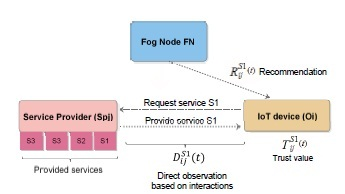

Introduction

The Internet of Things (IoT) is a network that integrates a variety of heterogeneous nodes, such as connected devices (sensors, robots, smart phones ...), connected cars, smart homes, etc. These smart objects communicate and collaborate in distributed and dynamic environments that are facing several security challenges. Trust management is one of the most important challenges in IoT. Existing trust management solutions do not meet the new requirements of IoT such as heterogeneity, mobility and scalability. In this paper, we propose a hierarchical and scalable blockchain-based trust management protocol with mobility support in
massively distributed IoT systems. In our protocol, mobile smart objects disseminate trust information on service providers to the blockchain. Thus, all the objects will have a global view on each service provider in the architecture, which speeds up the trust evaluation process. In addition, our protocol is resilient against the most known malicious attacks such as bad-mouthing, ballot-stuffing and cooperative attacks. We confirm the efficiency of our proposal through theoretical analysis and extensive simulations. Finally, we show that it outperforms existing solutions especially in terms of scalability, mobility support, communication and computation costs.
Concepts
- Trust management; Internet of Things;
Blockchain;
Fog computing;
Mobility support.